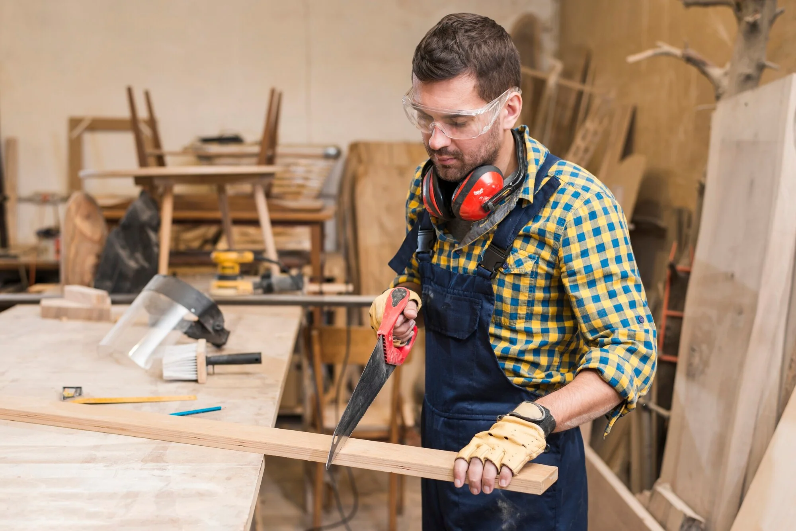

MaderLab S.L. "Ingeniería y arte en madera"

Somos expertos en la confección de todo tipo de vigas de madera para construcción.
Las vigas de madera decorativas aportan calidez y carácter a cualquier vivienda, ya sea en estilos rústicos, modernos o clásicos. Se pueden fabricar en madera maciza o en versiones huecas más ligeras, ideales para techos altos o espacios amplios. Además de su función estética, ayudan a delimitar ambientes y complementar la arquitectura interior. Disponibles en distintos acabados, tonalidades y texturas, se integran con facilidad al diseño general del hogar.
El equipo de carpinteros de nuestra empresa está compuesto por profesionales altamente capacitados y comprometidos con la calidad. Con años de experiencia en el sector, manejan con destreza herramientas avanzadas y técnicas tradicionales. Su atención al detalle, habilidad artesanal y capacidad para adaptarse a proyectos personalizados aseguran resultados excepcionales, siempre cumpliendo con los estándares más exigentes de cada cliente.
Excelente trabajo, cumplieron con todos los plazos y la calidad fue impresionante.

Muy satisfecha con el resultado, el equipo fue puntual, profesional y superó nuestras expectativas.
Gran experiencia, atención al cliente excelente y la carpintería de primera. Definitivamente volveré a contratar.
Muy profesionales, entregaron todo a tiempo y el acabado superó mis expectativas.
Gran atención al detalle, cumplieron los plazos y el resultado fue impecable.
Trabajo de alta calidad, responsables y comprometidos desde el primer día.
Todo perfecto, la comunicación fue clara y el proyecto quedó espectacular.
Recomendados al 100%, serios, puntuales y con un trabajo de primera.
Diseño y ejecución excelentes, entregaron justo lo que necesitábamos.

La creación de muebles innovadores va más allá de la estética; se trata de diseñar piezas funcionales que se adapten a diversas necesidades. Estos muebles están pensados para aprovechar al máximo el espacio, permitiendo transformaciones rápidas y fáciles. Pueden convertirse en camas, escritorios, estanterías o incluso divisores de ambientes, según se requiera. Incorporando tecnologías y materiales sostenibles, ofrecen soluciones prácticas para hogares pequeños o ambientes multifuncionales. La versatilidad es clave en estos diseños, permitiendo a los usuarios personalizar sus espacios sin sacrificar comodidad ni estilo, brindando funcionalidad sin perder atractivo visual. La innovación está en la adaptabilidad.
El departamento de investigación de nuestra carpintería se dedica a explorar nuevas técnicas, materiales y diseños. Su objetivo es mejorar continuamente la calidad de nuestros productos, incorporando innovaciones que optimicen la durabilidad y funcionalidad de cada pieza.
Gracias a su trabajo, conseguimos ofrecer soluciones personalizadas y vanguardistas, adaptadas a las necesidades del mercado. Este departamento colabora con diseñadores y arquitectos, buscando integrar tendencias actuales y la sostenibilidad en cada proyecto.